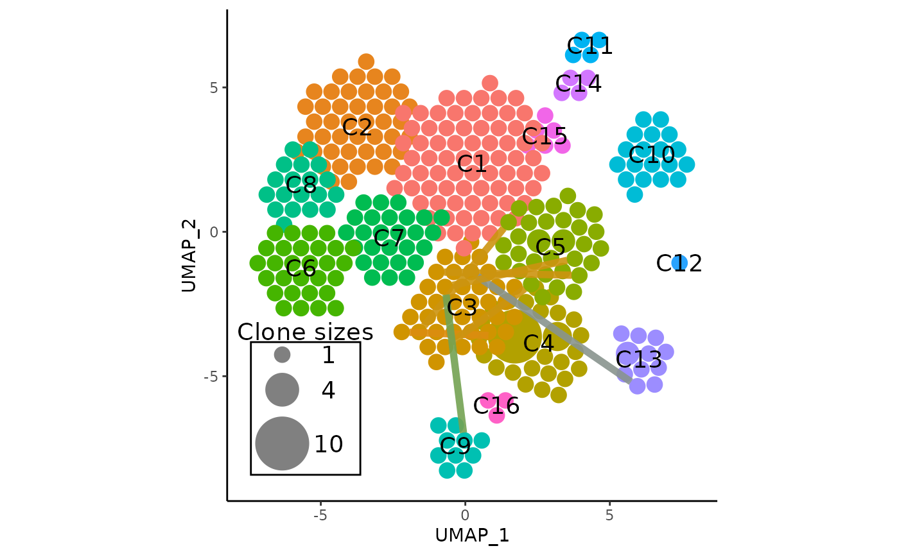

Working With Clonotypes Shared Across Clusters
Source:vignettes/APackOfTheClones-shared.Rmd
APackOfTheClones-shared.RmdIntroduction
A novel feature in this package is the ability to get, filter, and
visualize clonotypes that are common across seurat clusters. Potential
applications include the ability to quickly and intuitively gauge the
rough clonal heterogeneity of certain clusters. Note that in
scRepertoire, the scRepertoire::clonalNetwork function does
something similar for the original dimensional reductions using arrows,
though those display the aggregated degree of commonality between each
cluster.
Please read vignette("APackOfTheClones") and ideally
also vignette("APackOfTheClones-runs") before reading this
vignette. One should then also see that although some of the
visualizations in this vignette were produced with the
vizAPOTC() function, all visualizations can be replicated
with RunAPOTC() and APOTCPlot() that both
share parts of the arguments of vizAPOTC().
Getting Clonotypes Common Across Seurat Clusters
getSharedClones() is a convenience function does so
while allowing the same seurat object subsetting arguments as seen in
vignette("APackOfTheClones"), and returns the clonotypes as
a named list where the names are the clonotypes and the
elements are numeric vectors where each value is one of the
clusters that the clonotype name at its index correspond to.
getSharedClones(
seurat_obj,
reduction_base = "umap",
clonecall = "strict",
...,
extra_filter = NULL,
alt_ident = NULL,
run_id = NULL,
top = NULL,
top_per_cl = NULL,
intop = NULL,
intop_per_cl = NULL,
publicity = c(2L, Inf)
)The last five optional arguments allow additional filtering of the
shared clonotypes. Most notably, top will filter the
resulting shared clonotypes to only those ranked in the top
frequencies, either as a proportion or number. More details can be found
in the function level documentation for the other arguments. They are
especially useful when an experiment has a really high number of
single-cells, and the only clonotypes of interest are the most expanded
ones.
Here is an example of the function in action, where a combined seurat
object is loaded with the variable name pbmc:
head(getSharedClones(pbmc, clonecall = "aa"))
#> $CASLSGSARQLTF_CASSPTVAGEQFF
#> [1] 5 9
#>
#> $CVVSDFGNEKLTF_CASSLGSGGTGNEQFF
#> [1] 3 5
#>
#> $CVVSDNTGGFKTIF_CASSVRRERANTGELFF
#> [1] 3 4
#>
#> $`CAVGEKGYGGSQGNLIF_CASSFRPPGSPLHF;CASHGARGDGFCEKLFF`
#> [1] 3 5
#>
#> $CARKVRDSSYKLIF_CASSDSGYNEQFF
#> [1] 3 5
#>
#> $CASLSGSARQLTF_CASSSTVAGEQYF
#> [1] 4 5Visualizing Shared Clonotypes on an APackOfTheClones Plot
Using the output from getSharedClones(),
vizAPOTC() and APOTCPlot() both currently have
the exact same arguments to take the information and visually overlay
line links between each shared clone. Note that many more changes are to
come to this functionality. The arguments are as follows:
show_shared = NULL,
only_link = NULL,
clone_link_width = "auto",
clone_link_color = "black",
clone_link_alpha = 0.5Where if the output of getSharedClones is inputted into
show_shared, the links will be overlaid. The
only_link argument will further filter the links so that
all links originate from the cluster only_link. The other
are aesthetic arguments for the lines and are self explanatory. More
details in the function level docs.
Here is an example, using pbmc:
# get shared amino acid shared clones:
shared_clones_aa <- getSharedClones(pbmc, clonecall = "aa")
# generate the plot
vizAPOTC(
pbmc,
clonecall = "aa",
show_shared = shared_clones_aa,
verbose = FALSE
)A more useful visualization may be to overlay the links from one
cluster, and setting clone_link_color to
"blend" which will color each clone link according to the
average color of two clusters, for even more intuitiveness:
vizAPOTC(
pbmc,
clonecall = "aa",
show_shared = shared_clones_aa,
only_link = 3, # only link clonotypes from cluster 3
clone_link_color = "blend",
clone_link_width = 2,
clone_link_alpha = 0.9,
show_labels = TRUE,
verbose = FALSE
)
Synergy with showCloneHighlight()
In the interest of inspecting the topmost expanded clonotypes, the
topmost clones can be obtained, and the plot of clonal links can have
its shared clones highlighted with a different palette than the default
ggplot hues, and the non-highlighted sequences can even be slightly
dimmed to emphasize the difference. The following is an example of
highlighting and linking the top 4 most expanded clonotypes in
pbmc:
# For convenience, do an APackOfTheClones Run first
pbmc <- RunAPOTC(pbmc, clonecall = "aa", verbose = FALSE)
# get shared amino acid shared clones for the last run -
# note that the run_id can be replaced with `clonecall = "aa"`
shared_clones_aa_top4 <- getSharedClones(
pbmc,
run_id = getLastApotcDataId(pbmc),
top = 4
)
# generate the unhighlighted plot
linked_apotc_plot <- APOTCPlot(
pbmc,
show_shared = shared_clones_aa_top4,
verbose = FALSE
)
# highlight the top 4 clones with the viridis palette
# also slightly dimming other clones
library(viridis)
showCloneHighlight(
linked_apotc_plot,
clonotype = names(shared_clones_aa_top4),
color_each = viridis(4),
default_color = NULL,
scale_bg = 0.95
)#> * using the latest APackOfTheClones Run Data with object id: umap;CTaa;_;_Note that to actually get the frequencies of those top clones, one
can use the countCloneSizes function.